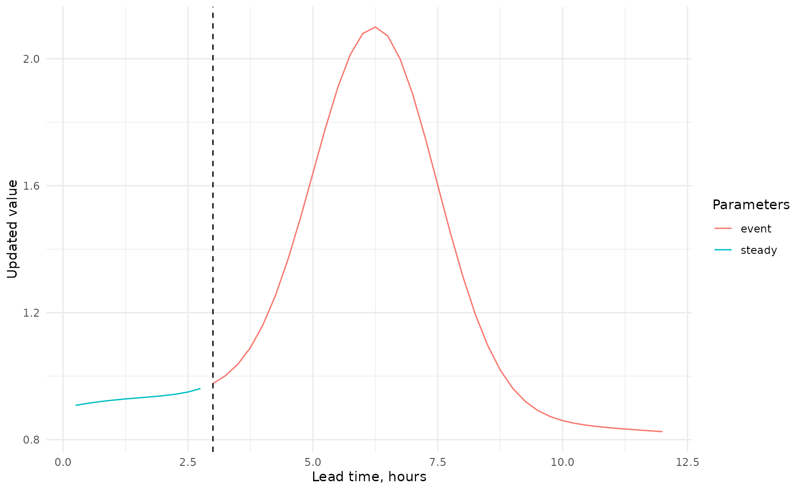
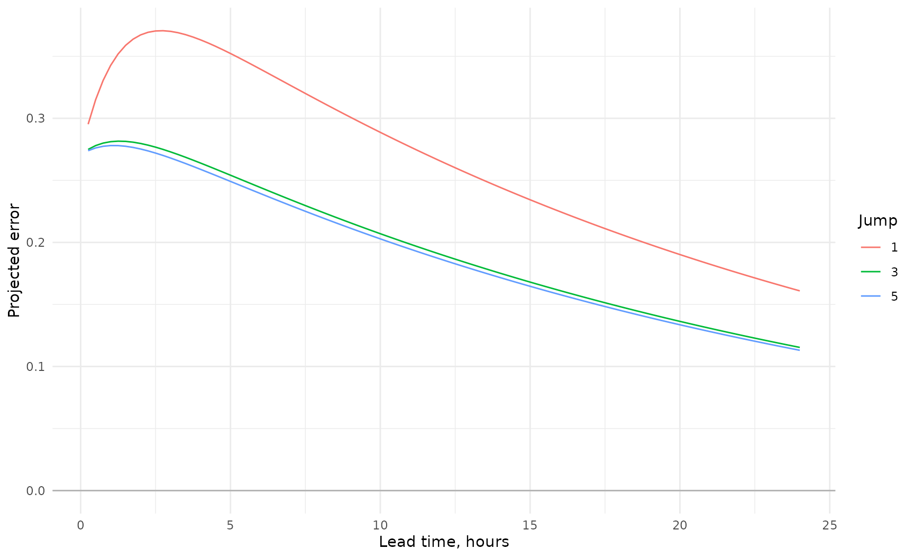

Event Triggered and Time Jumped AR
Source:vignettes/event-triggered-and-time-jumped-ar.Rmd
event-triggered-and-time-jumped-ar.RmdStatus and scope
Event Triggered AR (ET-AR) and Time Jumped AR (TJ-AR) were developed in 2025–2026 to address limitations of fixed-parameter AR updating without introducing a high-order model. The package marks trigger choice and CWI adjustment as experimental because site-independent trigger-selection procedures have not yet been established.
Event Triggered AR
ET-AR maintains two parameter sets. The steady set has a long principal decay time. The event set has a principal decay time related to catchment response. Forecasts start in the steady state and switch once to the event state when a trigger is met.
steady <- default_et_ar_steady_parameters()
event <- event_ar_parameters(response_time_steps = 48)
root_table(roots(steady, time_step_minutes = 15))
#> root_id root_real root_imaginary root_modulus lag_root_real
#> <int> <num> <num> <num> <num>
#> 1: 3 0.99999969 2.356286e-14 0.99999969 1.000000
#> 2: 2 0.81478737 -2.356286e-14 0.81478737 1.227314
#> 3: 1 -0.04978707 0.000000e+00 0.04978707 -20.085538
#> lag_root_imaginary lag_root_modulus raw_decay_time_steps decay_time_steps
#> <num> <num> <num> <num>
#> 1: -2.356288e-14 1.000000 3.240563e+06 3.240563e+06
#> 2: 3.549274e-14 1.227314 4.882143e+00 4.882143e+00
#> 3: 0.000000e+00 20.085538 3.333333e-01 3.333333e-01
#> effective_decay_time_steps decay_time_hours effective_decay_time_hours
#> <num> <num> <num>
#> 1: 3.240563e+06 8.101408e+05 8.101408e+05
#> 2: 4.882143e+00 1.220536e+00 1.220536e+00
#> 3: 2.338710e-01 8.333333e-02 5.846776e-02
#> oscillation_period_steps oscillation_period_hours is_growing is_persistent
#> <num> <num> <lgcl> <lgcl>
#> 1: Inf Inf FALSE FALSE
#> 2: Inf Inf FALSE FALSE
#> 3: 2 0.5 FALSE FALSE
#> is_oscillating modal_stability lag_stability display_order
#> <lgcl> <fctr> <fctr> <int>
#> 1: FALSE Stable Stable 1
#> 2: FALSE Stable Stable 2
#> 3: TRUE Stable Stable 3
root_table(roots(event, time_step_minutes = 15))
#> root_id root_real root_imaginary root_modulus lag_root_real
#> <int> <num> <num> <num> <num>
#> 1: 3 0.97938218 -1.173320e-24 0.97938218 1.021052
#> 2: 2 0.82514967 1.380115e-24 0.82514967 1.211901
#> 3: 1 -0.04978707 -2.067952e-25 0.04978707 -20.085537
#> lag_root_imaginary lag_root_modulus raw_decay_time_steps decay_time_steps
#> <num> <num> <num> <num>
#> 1: 1.223241e-24 1.021052 48.0000000 48.0000000
#> 2: -2.026982e-24 1.211901 5.2031710 5.2031710
#> 3: 8.342712e-23 20.085537 0.3333333 0.3333333
#> effective_decay_time_steps decay_time_hours effective_decay_time_hours
#> <num> <num> <num>
#> 1: 48.0000000 12.00000000 12.00000000
#> 2: 5.2031710 1.30079275 1.30079275
#> 3: 0.2338711 0.08333333 0.05846776
#> oscillation_period_steps oscillation_period_hours is_growing is_persistent
#> <num> <num> <lgcl> <lgcl>
#> 1: Inf Inf FALSE FALSE
#> 2: Inf Inf FALSE FALSE
#> 3: 2 0.5 FALSE FALSE
#> is_oscillating modal_stability lag_stability display_order
#> <lgcl> <fctr> <fctr> <int>
#> 1: FALSE Stable Stable 1
#> 2: FALSE Stable Stable 2
#> 3: TRUE Stable Stable 3The recurrence state is retained at the switch, so there is no discontinuous reset of the error amplitude.
Rainfall accumulation trigger
rainfall <- c(rep(0,8),1,2,3,4,2,1,rep(0,34))
trigger <- rainfall_accumulation_trigger(rainfall,window_steps=8L,threshold=10)
config <- et_ar_configuration(steady,event,trigger,metadata=list(response_time_source="site assessment"))
simulation <- 0.7 + 1.2*exp(-((seq_along(rainfall)-25)/7)^2)
result <- forecast_et_ar(config,c(.2,.19,.18),simulation,time_step_minutes=15)
series <- et_ar_series(result)
ggplot(series,aes(lead_time_minutes/60,updated,colour=parameter_state))+geom_line()+geom_vline(xintercept=series$lead_time_minutes[result$switch_step]/60,linetype="dashed")+theme_minimal()+labs(x="Lead time, hours",y="Updated value",colour="Parameters")
Updated level or flow trigger
threshold_config <- et_ar_configuration(
steady,event,
updated_threshold_trigger(threshold=1.0,initial_value=.8,quantity="level")
)
threshold_result <- forecast_et_ar(threshold_config,c(.2,.19,.18),simulation)
et_ar_series(threshold_result)
#> step time lead_time_minutes simulated ar_error updated_unconstrained
#> <int> <int> <num> <num> <num> <num>
#> 1: 1 1 15 0.7000094 0.2080556 0.9080651
#> 2: 2 2 30 0.7000246 0.2146239 0.9146484
#> 3: 3 3 45 0.7000616 0.2199753 0.9200369
#> 4: 4 4 60 0.7001481 0.2243356 0.9244837
#> 5: 5 5 75 0.7003419 0.2278883 0.9282302
#> 6: 6 6 90 0.7007578 0.2307830 0.9315409
#> 7: 7 7 105 0.7016126 0.2331415 0.9347541
#> 8: 8 8 120 0.7032940 0.2350632 0.9383573
#> 9: 9 9 135 0.7064597 0.2366290 0.9430887
#> 10: 10 10 150 0.7121611 0.2379047 0.9500658
#> 11: 11 11 165 0.7219788 0.2389442 0.9609229
#> 12: 12 12 180 0.7381337 0.2397911 0.9779247
#> 13: 13 13 195 0.7635166 0.2404811 1.0039977
#> 14: 14 14 210 0.8015640 0.2401285 1.0416925
#> 15: 15 15 225 0.8559071 0.2389800 1.0948872
#> 16: 16 16 240 0.9297555 0.2371903 1.1669458
#> 17: 17 17 255 1.0250420 0.2348888 1.2599308
#> 18: 18 18 270 1.1414553 0.2321822 1.3736375
#> 19: 19 19 285 1.2755827 0.2291578 1.5047405
#> 20: 20 20 300 1.4204476 0.2258876 1.6463352
#> 21: 21 21 315 1.5657067 0.2224304 1.7881372
#> 22: 22 22 330 1.6986490 0.2188347 1.9174837
#> 23: 23 23 345 1.8059325 0.2151400 2.0210725
#> 24: 24 24 360 1.8757584 0.2113786 2.0871370
#> 25: 25 25 375 1.9000000 0.2075768 2.1075768
#> 26: 26 26 390 1.8757584 0.2037561 2.0795145
#> 27: 27 27 405 1.8059325 0.1999339 2.0058665
#> 28: 28 28 420 1.6986490 0.1961243 1.8947733
#> 29: 29 29 435 1.5657067 0.1923386 1.7580453
#> 30: 30 30 450 1.4204476 0.1885858 1.6090335
#> 31: 31 31 465 1.2755827 0.1848732 1.4604559
#> 32: 32 32 480 1.1414553 0.1812065 1.3226618
#> 33: 33 33 495 1.0250420 0.1775899 1.2026319
#> 34: 34 34 510 0.9297555 0.1740271 1.1037826
#> 35: 35 35 525 0.8559071 0.1705204 1.0264276
#> 36: 36 36 540 0.8015640 0.1670719 0.9686359
#> 37: 37 37 555 0.7635166 0.1636826 0.9271992
#> 38: 38 38 570 0.7381337 0.1603536 0.8984873
#> 39: 39 39 585 0.7219788 0.1570852 0.8790640
#> 40: 40 40 600 0.7121611 0.1538776 0.8660387
#> 41: 41 41 615 0.7064597 0.1507307 0.8571904
#> 42: 42 42 630 0.7032940 0.1476441 0.8509382
#> 43: 43 43 645 0.7016126 0.1446175 0.8462301
#> 44: 44 44 660 0.7007578 0.1416503 0.8424081
#> 45: 45 45 675 0.7003419 0.1387417 0.8390836
#> 46: 46 46 690 0.7001481 0.1358910 0.8360390
#> 47: 47 47 705 0.7000616 0.1330973 0.8331589
#> 48: 48 48 720 0.7000246 0.1303598 0.8303844
#> step time lead_time_minutes simulated ar_error updated_unconstrained
#> <int> <int> <num> <num> <num> <num>
#> updated parameter_state trigger_type trigger_evidence
#> <num> <char> <char> <num>
#> 1: 0.9080651 steady updated_threshold NA
#> 2: 0.9146484 steady updated_threshold 0.9080651
#> 3: 0.9200369 steady updated_threshold 0.9146484
#> 4: 0.9244837 steady updated_threshold 0.9200369
#> 5: 0.9282302 steady updated_threshold 0.9244837
#> 6: 0.9315409 steady updated_threshold 0.9282302
#> 7: 0.9347541 steady updated_threshold 0.9315409
#> 8: 0.9383573 steady updated_threshold 0.9347541
#> 9: 0.9430887 steady updated_threshold 0.9383573
#> 10: 0.9500658 steady updated_threshold 0.9430887
#> 11: 0.9609229 steady updated_threshold 0.9500658
#> 12: 0.9779247 steady updated_threshold 0.9609229
#> 13: 1.0039977 steady updated_threshold 0.9779247
#> 14: 1.0416925 event updated_threshold 1.0039977
#> 15: 1.0948872 event updated_threshold 1.0416925
#> 16: 1.1669458 event updated_threshold 1.0948872
#> 17: 1.2599308 event updated_threshold 1.1669458
#> 18: 1.3736375 event updated_threshold 1.2599308
#> 19: 1.5047405 event updated_threshold 1.3736375
#> 20: 1.6463352 event updated_threshold 1.5047405
#> 21: 1.7881372 event updated_threshold 1.6463352
#> 22: 1.9174837 event updated_threshold 1.7881372
#> 23: 2.0210725 event updated_threshold 1.9174837
#> 24: 2.0871370 event updated_threshold 2.0210725
#> 25: 2.1075768 event updated_threshold 2.0871370
#> 26: 2.0795145 event updated_threshold 2.1075768
#> 27: 2.0058665 event updated_threshold 2.0795145
#> 28: 1.8947733 event updated_threshold 2.0058665
#> 29: 1.7580453 event updated_threshold 1.8947733
#> 30: 1.6090335 event updated_threshold 1.7580453
#> 31: 1.4604559 event updated_threshold 1.6090335
#> 32: 1.3226618 event updated_threshold 1.4604559
#> 33: 1.2026319 event updated_threshold 1.3226618
#> 34: 1.1037826 event updated_threshold 1.2026319
#> 35: 1.0264276 event updated_threshold 1.1037826
#> 36: 0.9686359 event updated_threshold 1.0264276
#> 37: 0.9271992 event updated_threshold 0.9686359
#> 38: 0.8984873 event updated_threshold 0.9271992
#> 39: 0.8790640 event updated_threshold 0.8984873
#> 40: 0.8660387 event updated_threshold 0.8790640
#> 41: 0.8571904 event updated_threshold 0.8660387
#> 42: 0.8509382 event updated_threshold 0.8571904
#> 43: 0.8462301 event updated_threshold 0.8509382
#> 44: 0.8424081 event updated_threshold 0.8462301
#> 45: 0.8390836 event updated_threshold 0.8424081
#> 46: 0.8360390 event updated_threshold 0.8390836
#> 47: 0.8331589 event updated_threshold 0.8360390
#> 48: 0.8303844 event updated_threshold 0.8331589
#> updated parameter_state trigger_type trigger_evidence
#> <num> <char> <char> <num>
#> triggered_this_step switch_step
#> <lgcl> <int>
#> 1: FALSE NA
#> 2: FALSE NA
#> 3: FALSE NA
#> 4: FALSE NA
#> 5: FALSE NA
#> 6: FALSE NA
#> 7: FALSE NA
#> 8: FALSE NA
#> 9: FALSE NA
#> 10: FALSE NA
#> 11: FALSE NA
#> 12: FALSE NA
#> 13: FALSE NA
#> 14: TRUE 14
#> 15: FALSE 14
#> 16: FALSE 14
#> 17: FALSE 14
#> 18: FALSE 14
#> 19: FALSE 14
#> 20: FALSE 14
#> 21: FALSE 14
#> 22: FALSE 14
#> 23: FALSE 14
#> 24: FALSE 14
#> 25: FALSE 14
#> 26: FALSE 14
#> 27: FALSE 14
#> 28: FALSE 14
#> 29: FALSE 14
#> 30: FALSE 14
#> 31: FALSE 14
#> 32: FALSE 14
#> 33: FALSE 14
#> 34: FALSE 14
#> 35: FALSE 14
#> 36: FALSE 14
#> 37: FALSE 14
#> 38: FALSE 14
#> 39: FALSE 14
#> 40: FALSE 14
#> 41: FALSE 14
#> 42: FALSE 14
#> 43: FALSE 14
#> 44: FALSE 14
#> 45: FALSE 14
#> 46: FALSE 14
#> 47: FALSE 14
#> 48: FALSE 14
#> triggered_this_step switch_step
#> <lgcl> <int>The threshold is evaluated against the previous updated value, not the simulation alone.
CWI-adjusted rainfall trigger
The experimental factor is one at or below CWI 125, declines linearly to zero at CWI 165 and is zero thereafter.
cwi_rainfall_factor(c(120,125,145,165,170))
#> [1] 1.0 1.0 0.5 0.0 0.0
cwi_trigger <- cwi_adjusted_rainfall_trigger(rainfall,cwi=145,dry_threshold=20,window_steps=8L)Time Jumped AR
TJ-AR selects p historic errors separated by jump
J rather than using consecutive points. This can reduce
sensitivity to short-period noise where J is greater than
the noise decorrelation time.
set.seed(42)
history <- seq(.25,.08,length.out=40)+rnorm(40,0,.015)
tj <- forecast_tj_ar(default_ar_parameters(),history,jump=5L,steps=96L)
tj$selected_inputs
#> input_number history_index modal_time error
#> <int> <int> <int> <num>
#> 1: 1 1 -1 0.2705644
#> 2: 2 6 -6 0.2266133
#> 3: 3 11 -11 0.2259833
tj_ar_series(tj)
#> step lead_time_minutes lead_time_hours ar_error
#> <int> <num> <num> <num>
#> 1: 1 15 0.25 0.2739148
#> 2: 2 30 0.50 0.2761534
#> 3: 3 45 0.75 0.2774801
#> 4: 4 60 1.00 0.2780596
#> 5: 5 75 1.25 0.2780281
#> 6: 6 90 1.50 0.2774975
#> 7: 7 105 1.75 0.2765604
#> 8: 8 120 2.00 0.2752930
#> 9: 9 135 2.25 0.2737583
#> 10: 10 150 2.50 0.2720080
#> 11: 11 165 2.75 0.2700848
#> 12: 12 180 3.00 0.2680240
#> 13: 13 195 3.25 0.2658545
#> 14: 14 210 3.50 0.2636001
#> 15: 15 225 3.75 0.2612807
#> 16: 16 240 4.00 0.2589122
#> 17: 17 255 4.25 0.2565080
#> 18: 18 270 4.50 0.2540790
#> 19: 19 285 4.75 0.2516342
#> 20: 20 300 5.00 0.2491809
#> 21: 21 315 5.25 0.2467251
#> 22: 22 330 5.50 0.2442718
#> 23: 23 345 5.75 0.2418248
#> 24: 24 360 6.00 0.2393876
#> 25: 25 375 6.25 0.2369627
#> 26: 26 390 6.50 0.2345523
#> 27: 27 405 6.75 0.2321582
#> 28: 28 420 7.00 0.2297816
#> 29: 29 435 7.25 0.2274236
#> 30: 30 450 7.50 0.2250852
#> 31: 31 465 7.75 0.2227670
#> 32: 32 480 8.00 0.2204695
#> 33: 33 495 8.25 0.2181930
#> 34: 34 510 8.50 0.2159379
#> 35: 35 525 8.75 0.2137044
#> 36: 36 540 9.00 0.2114924
#> 37: 37 555 9.25 0.2093021
#> 38: 38 570 9.50 0.2071335
#> 39: 39 585 9.75 0.2049866
#> 40: 40 600 10.00 0.2028612
#> 41: 41 615 10.25 0.2007573
#> 42: 42 630 10.50 0.1986748
#> 43: 43 645 10.75 0.1966134
#> 44: 44 660 11.00 0.1945732
#> 45: 45 675 11.25 0.1925538
#> 46: 46 690 11.50 0.1905552
#> 47: 47 705 11.75 0.1885772
#> 48: 48 720 12.00 0.1866195
#> 49: 49 735 12.25 0.1846821
#> 50: 50 750 12.50 0.1827646
#> 51: 51 765 12.75 0.1808670
#> 52: 52 780 13.00 0.1789890
#> 53: 53 795 13.25 0.1771305
#> 54: 54 810 13.50 0.1752912
#> 55: 55 825 13.75 0.1734710
#> 56: 56 840 14.00 0.1716696
#> 57: 57 855 14.25 0.1698870
#> 58: 58 870 14.50 0.1681228
#> 59: 59 885 14.75 0.1663769
#> 60: 60 900 15.00 0.1646491
#> 61: 61 915 15.25 0.1629393
#> 62: 62 930 15.50 0.1612472
#> 63: 63 945 15.75 0.1595727
#> 64: 64 960 16.00 0.1579155
#> 65: 65 975 16.25 0.1562756
#> 66: 66 990 16.50 0.1546527
#> 67: 67 1005 16.75 0.1530466
#> 68: 68 1020 17.00 0.1514572
#> 69: 69 1035 17.25 0.1498843
#> 70: 70 1050 17.50 0.1483278
#> 71: 71 1065 17.75 0.1467874
#> 72: 72 1080 18.00 0.1452630
#> 73: 73 1095 18.25 0.1437544
#> 74: 74 1110 18.50 0.1422615
#> 75: 75 1125 18.75 0.1407841
#> 76: 76 1140 19.00 0.1393221
#> 77: 77 1155 19.25 0.1378752
#> 78: 78 1170 19.50 0.1364434
#> 79: 79 1185 19.75 0.1350264
#> 80: 80 1200 20.00 0.1336241
#> 81: 81 1215 20.25 0.1322364
#> 82: 82 1230 20.50 0.1308632
#> 83: 83 1245 20.75 0.1295041
#> 84: 84 1260 21.00 0.1281592
#> 85: 85 1275 21.25 0.1268283
#> 86: 86 1290 21.50 0.1255111
#> 87: 87 1305 21.75 0.1242077
#> 88: 88 1320 22.00 0.1229178
#> 89: 89 1335 22.25 0.1216413
#> 90: 90 1350 22.50 0.1203780
#> 91: 91 1365 22.75 0.1191279
#> 92: 92 1380 23.00 0.1178907
#> 93: 93 1395 23.25 0.1166664
#> 94: 94 1410 23.50 0.1154548
#> 95: 95 1425 23.75 0.1142558
#> 96: 96 1440 24.00 0.1130693
#> step lead_time_minutes lead_time_hours ar_error
#> <int> <num> <num> <num>jump = 1 reproduces conventional AR.
jump_plot <- plot_jump_sensitivity(
default_ar_parameters(),
history,
jumps = c(
1L,
3L,
5L
),
steps = 96L
)
jump_plot
attr(
jump_plot,
"failed_jumps"
)
#> Empty data.table (0 rows and 2 cols): jump,error
assess_jump_size(default_ar_parameters(),jump=5L,noise_decorrelation_steps=3)
#> jump principal_decay_steps middle_decay_steps fast_decay_steps
#> <int> <num> <num> <num>
#> 1: 5 95.79098 5.2039 0.3333327
#> jump_to_middle_ratio jump_to_fast_ratio smaller_than_noise_decorrelation
#> <num> <num> <lgcl>
#> 1: 0.9608179 15.00003 FALSE
#> effective_order_warning
#> <char>
#> 1: Fast-root contribution may be negligible; behaviour may approach AR(2).A large jump can suppress the fast root and eventually the middle root. The method can then resemble AR(2) or AR(1). The diagnostic reports this risk without imposing a universal threshold.
Combined ET-TJ-AR
TJ-AR first reconstructs the recent consecutive state. ET-AR then advances the normal recurrence and switches parameters when required.
combined <- forecast_et_tj_ar(config,history,jump=5L,simulated=simulation)
combined$tj_initialisation$selected_inputs
#> input_number history_index modal_time error
#> <int> <int> <int> <num>
#> 1: 1 1 -1 0.2705644
#> 2: 2 6 -6 0.2266133
#> 3: 3 11 -11 0.2259833
et_ar_series(combined)
#> step time lead_time_minutes simulated ar_error updated_unconstrained
#> <int> <int> <num> <num> <num> <num>
#> 1: 1 1 15 0.7000094 0.2751255 0.9751349
#> 2: 2 2 30 0.7000246 0.2788418 0.9788664
#> 3: 3 3 45 0.7000616 0.2818698 0.9819314
#> 4: 4 4 60 0.7001481 0.2843369 0.9844850
#> 5: 5 5 75 0.7003419 0.2863471 0.9866891
#> 6: 6 6 90 0.7007578 0.2879850 0.9887428
#> 7: 7 7 105 0.7016126 0.2893195 0.9909321
#> 8: 8 8 120 0.7032940 0.2904068 0.9937008
#> 9: 9 9 135 0.7064597 0.2912927 0.9977524
#> 10: 10 10 150 0.7121611 0.2920145 1.0041756
#> 11: 11 11 165 0.7219788 0.2926026 1.0145814
#> 12: 12 12 180 0.7381337 0.2919704 1.0301041
#> 13: 13 13 195 0.7635166 0.2904095 1.0539261
#> 14: 14 14 210 0.8015640 0.2881011 1.0896651
#> 15: 15 15 225 0.8559071 0.2851969 1.1411040
#> 16: 16 16 240 0.9297555 0.2818218 1.2115773
#> 17: 17 17 255 1.0250420 0.2780783 1.3031203
#> 18: 18 18 270 1.1414553 0.2740505 1.4155059
#> 19: 19 19 285 1.2755827 0.2698076 1.5453903
#> 20: 20 20 300 1.4204476 0.2654061 1.6858537
#> 21: 21 21 315 1.5657067 0.2608922 1.8265990
#> 22: 22 22 330 1.6986490 0.2563039 1.9549529
#> 23: 23 23 345 1.8059325 0.2516719 2.0576044
#> 24: 24 24 360 1.8757584 0.2470213 2.1227797
#> 25: 25 25 375 1.9000000 0.2423725 2.1423725
#> 26: 26 26 390 1.8757584 0.2377419 2.1135003
#> 27: 27 27 405 1.8059325 0.2331426 2.0390752
#> 28: 28 28 420 1.6986490 0.2285853 1.9272343
#> 29: 29 29 435 1.5657067 0.2240783 1.7897851
#> 30: 30 30 450 1.4204476 0.2196283 1.6400759
#> 31: 31 31 465 1.2755827 0.2152402 1.4908229
#> 32: 32 32 480 1.1414553 0.2109181 1.3523735
#> 33: 33 33 495 1.0250420 0.2066649 1.2317069
#> 34: 34 34 510 0.9297555 0.2024827 1.1322382
#> 35: 35 35 525 0.8559071 0.1983730 1.0542801
#> 36: 36 36 540 0.8015640 0.1943366 0.9959006
#> 37: 37 37 555 0.7635166 0.1903741 0.9538907
#> 38: 38 38 570 0.7381337 0.1864855 0.9246191
#> 39: 39 39 585 0.7219788 0.1826707 0.9046495
#> 40: 40 40 600 0.7121611 0.1789293 0.8910904
#> 41: 41 41 615 0.7064597 0.1752607 0.8817204
#> 42: 42 42 630 0.7032940 0.1716641 0.8749582
#> 43: 43 43 645 0.7016126 0.1681387 0.8697513
#> 44: 44 44 660 0.7007578 0.1646836 0.8654415
#> 45: 45 45 675 0.7003419 0.1612977 0.8616396
#> 46: 46 46 690 0.7001481 0.1579800 0.8581280
#> 47: 47 47 705 0.7000616 0.1547292 0.8547908
#> 48: 48 48 720 0.7000246 0.1515444 0.8515690
#> step time lead_time_minutes simulated ar_error updated_unconstrained
#> <int> <int> <num> <num> <num> <num>
#> updated parameter_state trigger_type trigger_evidence
#> <num> <char> <char> <num>
#> 1: 0.9751349 steady rainfall_accumulation 0
#> 2: 0.9788664 steady rainfall_accumulation 0
#> 3: 0.9819314 steady rainfall_accumulation 0
#> 4: 0.9844850 steady rainfall_accumulation 0
#> 5: 0.9866891 steady rainfall_accumulation 0
#> 6: 0.9887428 steady rainfall_accumulation 0
#> 7: 0.9909321 steady rainfall_accumulation 0
#> 8: 0.9937008 steady rainfall_accumulation 0
#> 9: 0.9977524 steady rainfall_accumulation 1
#> 10: 1.0041756 steady rainfall_accumulation 3
#> 11: 1.0145814 steady rainfall_accumulation 6
#> 12: 1.0301041 event rainfall_accumulation 10
#> 13: 1.0539261 event rainfall_accumulation 12
#> 14: 1.0896651 event rainfall_accumulation 13
#> 15: 1.1411040 event rainfall_accumulation 13
#> 16: 1.2115773 event rainfall_accumulation 13
#> 17: 1.3031203 event rainfall_accumulation 12
#> 18: 1.4155059 event rainfall_accumulation 10
#> 19: 1.5453903 event rainfall_accumulation 7
#> 20: 1.6858537 event rainfall_accumulation 3
#> 21: 1.8265990 event rainfall_accumulation 1
#> 22: 1.9549529 event rainfall_accumulation 0
#> 23: 2.0576044 event rainfall_accumulation 0
#> 24: 2.1227797 event rainfall_accumulation 0
#> 25: 2.1423725 event rainfall_accumulation 0
#> 26: 2.1135003 event rainfall_accumulation 0
#> 27: 2.0390752 event rainfall_accumulation 0
#> 28: 1.9272343 event rainfall_accumulation 0
#> 29: 1.7897851 event rainfall_accumulation 0
#> 30: 1.6400759 event rainfall_accumulation 0
#> 31: 1.4908229 event rainfall_accumulation 0
#> 32: 1.3523735 event rainfall_accumulation 0
#> 33: 1.2317069 event rainfall_accumulation 0
#> 34: 1.1322382 event rainfall_accumulation 0
#> 35: 1.0542801 event rainfall_accumulation 0
#> 36: 0.9959006 event rainfall_accumulation 0
#> 37: 0.9538907 event rainfall_accumulation 0
#> 38: 0.9246191 event rainfall_accumulation 0
#> 39: 0.9046495 event rainfall_accumulation 0
#> 40: 0.8910904 event rainfall_accumulation 0
#> 41: 0.8817204 event rainfall_accumulation 0
#> 42: 0.8749582 event rainfall_accumulation 0
#> 43: 0.8697513 event rainfall_accumulation 0
#> 44: 0.8654415 event rainfall_accumulation 0
#> 45: 0.8616396 event rainfall_accumulation 0
#> 46: 0.8581280 event rainfall_accumulation 0
#> 47: 0.8547908 event rainfall_accumulation 0
#> 48: 0.8515690 event rainfall_accumulation 0
#> updated parameter_state trigger_type trigger_evidence
#> <num> <char> <char> <num>
#> triggered_this_step switch_step
#> <lgcl> <int>
#> 1: FALSE NA
#> 2: FALSE NA
#> 3: FALSE NA
#> 4: FALSE NA
#> 5: FALSE NA
#> 6: FALSE NA
#> 7: FALSE NA
#> 8: FALSE NA
#> 9: FALSE NA
#> 10: FALSE NA
#> 11: FALSE NA
#> 12: TRUE 12
#> 13: FALSE 12
#> 14: FALSE 12
#> 15: FALSE 12
#> 16: FALSE 12
#> 17: FALSE 12
#> 18: FALSE 12
#> 19: FALSE 12
#> 20: FALSE 12
#> 21: FALSE 12
#> 22: FALSE 12
#> 23: FALSE 12
#> 24: FALSE 12
#> 25: FALSE 12
#> 26: FALSE 12
#> 27: FALSE 12
#> 28: FALSE 12
#> 29: FALSE 12
#> 30: FALSE 12
#> 31: FALSE 12
#> 32: FALSE 12
#> 33: FALSE 12
#> 34: FALSE 12
#> 35: FALSE 12
#> 36: FALSE 12
#> 37: FALSE 12
#> 38: FALSE 12
#> 39: FALSE 12
#> 40: FALSE 12
#> 41: FALSE 12
#> 42: FALSE 12
#> 43: FALSE 12
#> 44: FALSE 12
#> 45: FALSE 12
#> 46: FALSE 12
#> 47: FALSE 12
#> 48: FALSE 12
#> triggered_this_step switch_step
#> <lgcl> <int>Operational assurance
Before operational use, document:
- steady and event parameter provenance;
- catchment response-time source;
- trigger type, window and threshold;
- jump-size evidence;
- input domain and units;
- rating and threshold versions;
- behaviour over several events, start times and antecedent conditions;
- effects on downstream model boundaries.